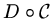
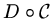

In mathematical terminology the word amoeba is a recent addition.1 It was introduced by I.M.Gelfand, M.M.Kapranov and A.V.Zelevinsky in their book [2] in 1994. A mathematical amoeba falls short in being similar to its biological prototype. In the simplest case, it is a region in , which may pretend to be a picture of amoeba: a body with several holes (vacuoles) and straight narrowing tentacles (pseudopods) reaching to infinity.
A planar amoeba is the image of the zero locus of a polynomial in two variables under the map
An amoeba reaches infinity by several tentacles. Each tentacle accommodates a ray, and narrows exponentially fast towards it. Thus there is only one ray in a tentacle. The ray is orthogonal to a side of the Newton polygon and directed along an outward normal of the side. For each side of there is at least one tentacle associated to it. The maximal number of such tentacles is a sort of lattice length of the side: the number of pieces to which the side is divided by integer lattice points (i.e., points with integer coordinates). We observe this in the two amoebas above, whoe respective Newton polygons we display below
Each connected component of amoeba's complement
is convex.
Besides components lying between tentacles, there can be bounded
components. The number of bounded components is at most the number
of interior integer lattice points of , and hence the total number of
components of
is at most the number of all integer
lattice points of . Each component corresponds to some integer
lattice point of . To establish this correspondence, take a point
in a component of
, and consider its preimage under the map
. The
preimage is a torus, it consists of points whose complex coordinates
have fixed absolute values, but varying arguments. On the torus there
are circles: meridians and parallels, consisting of points with one of
the coordinates, fixed. Consider a curve , on which the abscissa
is fixed. In
there is a disk  bounded by . Let us count
the intersections of
bounded by . Let us count
the intersections of  with the complex curve counting intersection
points with multiplicities (so this is rather homological intersection
number , or, if you like, the linking number
).
Denote the intersection number by and the number which is defined
similarly, but starting with a curve on the torus where the ordinate
with the complex curve counting intersection
points with multiplicities (so this is rather homological intersection
number , or, if you like, the linking number
).
Denote the intersection number by and the number which is defined
similarly, but starting with a curve on the torus where the ordinate
 is fixed, by
is fixed, by  . These numbers do not depend on choices made after
choosing a connected component of
: varying the curves
on the torus and even the torus itself do not affect them.
The point
belongs to . This is the point
corresponding to the component of
we started with.
Different components of
give rise to different integer
lattice points of . It may happen that some integer lattice points
of do not correspond to any component. Only vertices of
correspond to components necessarily. Any collection of integer lattice
points of , which includes all vertices, is realizable by the amoeba
of an appropriate algebraic curve with this Newton polygon .
. These numbers do not depend on choices made after
choosing a connected component of
: varying the curves
on the torus and even the torus itself do not affect them.
The point
belongs to . This is the point
corresponding to the component of
we started with.
Different components of
give rise to different integer
lattice points of . It may happen that some integer lattice points
of do not correspond to any component. Only vertices of
correspond to components necessarily. Any collection of integer lattice
points of , which includes all vertices, is realizable by the amoeba
of an appropriate algebraic curve with this Newton polygon .
Although a planar amoeba is not bounded, its area is finite.
Moreover,
These real curves are remarkable from many viewpoints. They were discovered by A. Harnack in 1876 when he constructed real algebraic plane projective curves with the maximal number of components for each degree. Only one component of a Harnack curve meets the coordinate axes (including the line of infinity), and the intersections with the axes lie on disjoint arcs of this component. Consideration of amoebas allowed G.Mikhalkin to prove that any real curve with these properties must be topologically isotopic to a Harnack curve.
One of the main analytic tools used in study of amoebas is a remarkable
Ronkin function
. For a polynomial
, it is defined by
Logarithmic coordinates and amoebas disclose a piecewise linear stream in the nature of algebraic geometry. There is a non-archimedian version of amoebas which brings these ideas to algebraic varieties over other fields. There is also a similar theory in higher dimensions. The notion of an algebraic curve is replaced by the notion of an algebraic variety, and the Newton polygon becomes a Newton polytope. Amoebas provide a new way to visualize complex algebraic varieties. Looking at an amoeba, one can see handles of complex curves and cycles in high dimensional varieties, watch degenerations and build more complicated varieties from simple ones.
The theory of amoebas is a fresh and beautiful field of research, still
quite accessible to a newcomer, where exciting discoveries are still
ahead. The impressive results described above were obtained during a
short period of about 8 years by few people. The first remarks belong
to I.M.Gelfand, M.M.Kapranov and A.V.Zelevinsky. Relations between components of
and integer lattice points of have been discovered
by M. Forsberg, M. Passare and A. Tsikh.
The Spine of amoeba, Ronkin function,
estimate of area are due to H.Rullgård and M.Passare. Homological
interpretations and relations to real algebraic geometry are due to
G. Mikhalkin.
I enjoyed the feast.
About
20 years ago I found a way to construct real algebraic curves by a
sort of gluing curves to each other. I heard that this gluing and use
of logarithmic coordinates in its description, being replanted to the
complex soil, have motivated introduction of amoebas. A version of the
gluing is used to glue amoebas.